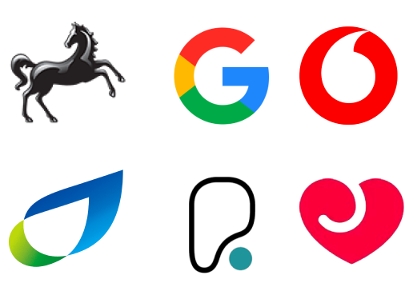

Your Cheat Codes to JFDI
Your Cheat Codes to JFDI
Adam Hall
Adam Hall
AI Specialist
Adam Hall

Adam Hall

Closing the world's digital skills gap
Adam Hall


Version 15
Since the talk's conception
the AI startup sector has risen 5x
the AI startup sector has risen 5x
from 14,700 to 75,741 companies
the AI startup sector has risen 5x
from 14,700 to 75,741 companies
Source: Tracxn Technologiesthe AI startup sector has risen 5x
the AI startup sector has risen 5x
first run in March 2023
Example...
- Ex-OpenAI staff found Safe SuperIntelligence (SSI) Inc
- Elon is make a huge AI data factory
- Meta AI gets a refresh
- Claude gets a refresh

Change is faster than ever
Change is faster than ever
but will never again be this slow
2,000,000
now
5,000,000
3 years
5,000,000
3 years
have never received
digital upskilling
from their employer
Don't let technology race away


I think therefor...
I think therefor...
I am


You are working with a product team. I would like you to write a user story for each idea the team comes up with
Wedding seating plan app
As a busy bride to be I want to create a seating plan for the wedding So everyone will know their place, and the day will be amazingNew direct debit payment system on the app
As user on the app I want setup an automatic monthly payment system So I don't have to log in every month to pay manually
Right Tool, Right Job
Consider Bard
Consider Bard
Consider Bard
Some suggestions
Assess your tools regularly
- Legal
- Ethics
- Price
- Interoperability
- Documentation
- Team Performance
Focus on the filters first
Productivity Experiment
Context
- Short time period
- 2 separate teams
- Migrate Native mobile code to ReactNative
- Existing Figma Library
Traditional
Gen AI
Traditional
Gen AI
15%
Tips
Learn the tools
Name your Figma layers
Work in small teams
Communicate
Learn to use the tools by using the tools
Empathy
Who is more empathetic, humans or AI?

ChatGPT has better bedside manner than Physicians*
ChatGPT has better bedside manner than Physicians*
*according to health-care professionalsChatGPT has better quality too
How do I benefit from this?
How do I benefit from this?
Code reviews
Rewrite this code review comment to be more constructive and friendly but still short manner Give me 5 options to chose from.
Allowing people to create OAPHs for objects they don't own is dangerous! Hardcode it or find a less dumb solution.
Misinformation


Lawyer used ChatGPT
Bias

Don't assume neutrality
And the humans?
- Automation bias
- Sunk cost fallacy
- Anchoring bias
- Availability Heuristic
- In-Group Bias
Know your biases
Conclusion
What is it good for?
- Productivity
- Learning new things
- Minimum Viable Experiments
- Exploring ideas
- Improving the way you communicate
- Becoming data driven
What is it bad at?
- Single source of Truth
- Reliability
- Complexity & Nuance
- Amplification of bias
- Unique thought
- Specialist domain knowledge

Ginni Rometty
Some people call this artificial intelligence, but the reality is this technology will enhance us. So instead of artificial intelligence, I think we'll augment our intelligence.
by mitch0zᵍᵐ